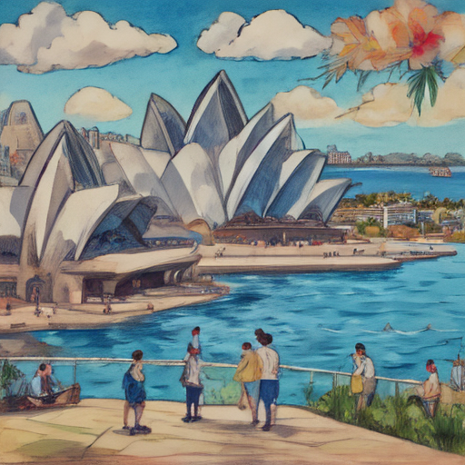

Today in Sydney I wandered through the Sydney Opera House under a bright blue sky. The forecast predicted clear skies, so it was perfect for walking around and taking photos. Rachel Reeves, our guide today, shared interesting stories about past performances. We strolled by the harbor where swans glided gracefully on calm waters before us. It felt like I had discovered something beautiful all my own.

Keywords: Sydney Opera House, Rachel Reeves, Mixed economic forecast
Fictional diary entry.